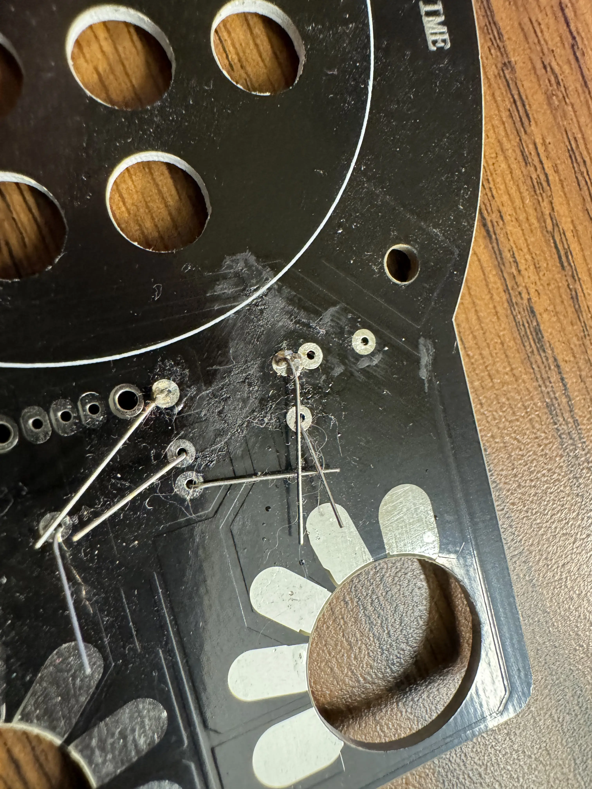
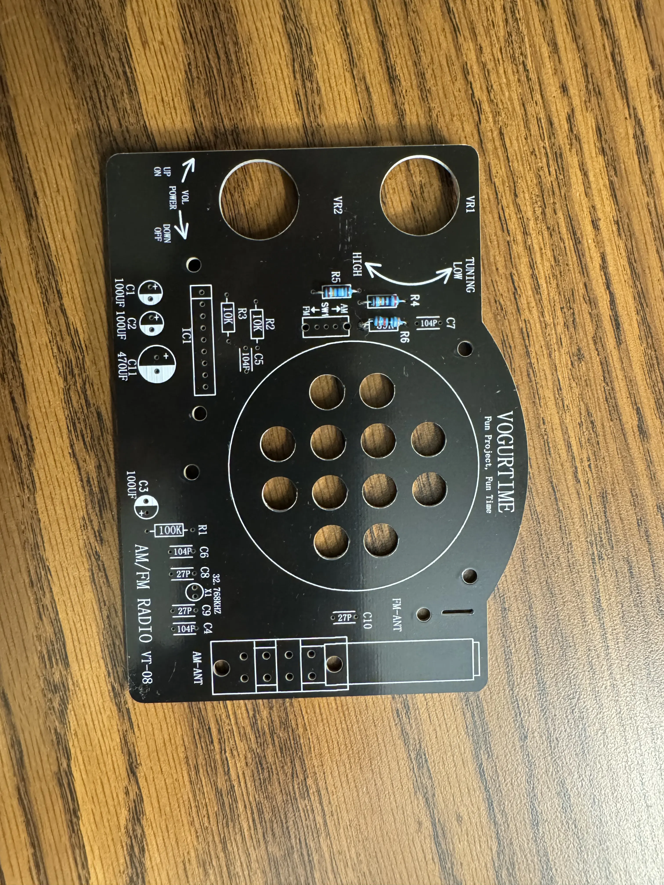
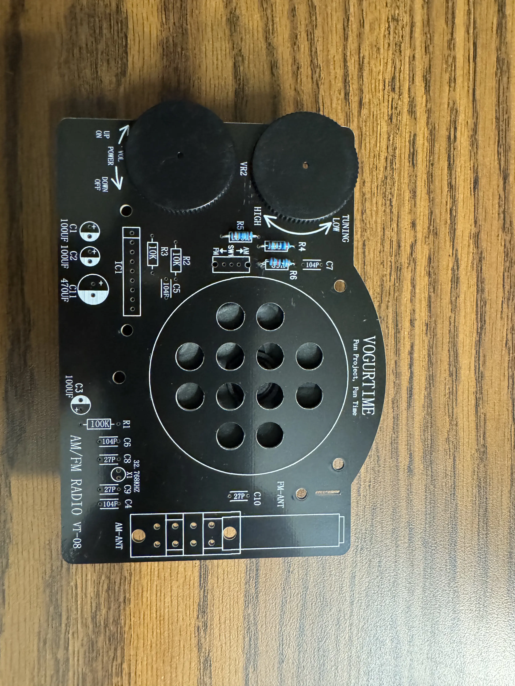
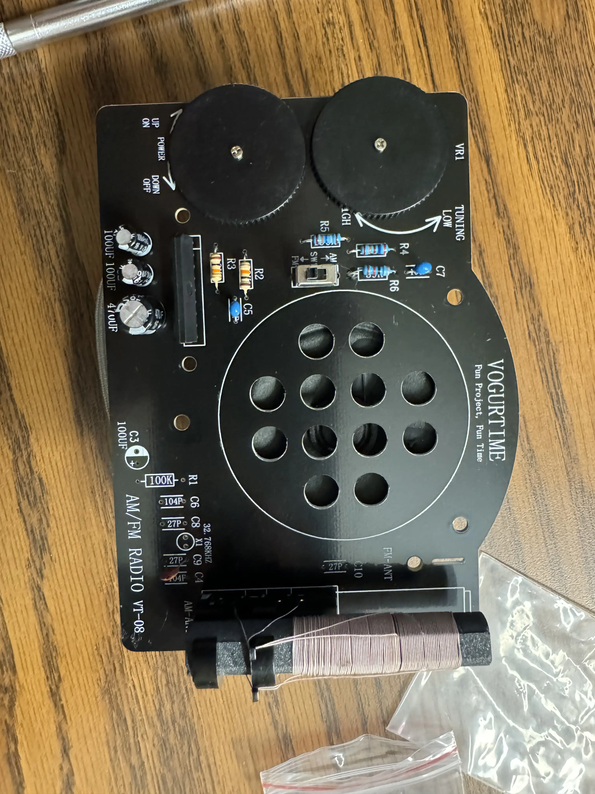
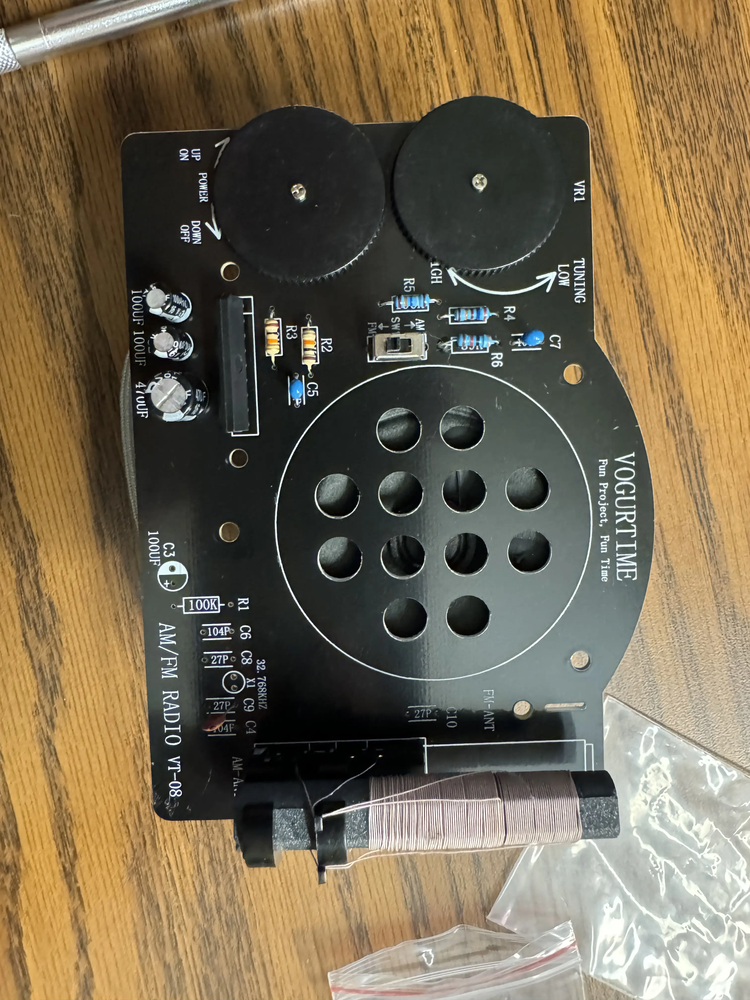
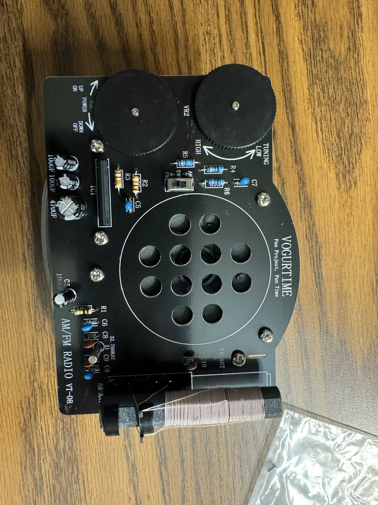

ECE Discovery Project
← Take me Back homePart 1. Learning to Soldering
Georgia Tech offers an array of opportunities for Computer Engineering students to delve into practical electronics, one such avenue being the utilization of the cutting-edge soldering stations housed within The Hive, a collaborative workspace fostering innovation and hands-on learning. For many, including myself, embarking on the journey of soldering was akin to entering uncharted territory. However, armed with determination and the wealth of resources provided by the institute, this venture became an enriching educational experience. Initially, the prospect of wielding a soldering iron may seem daunting, but with the aid of instructional YouTube videos recommended by our mentors and the guidance of seasoned peers leaders, the process gradually demystified.
Picutred above was the first solder blob I ever made, as you can see - it's very rough, and was eventually redone. But it provided a great learning experience for me to understand the basics of soldering and how to properly solder components together. It was also strong enough to run an inital test with a multi-meter to ensure that the connection was made and no solder pads were bridged.
Part 2. Starting Small
 As novices in the realm of soldering, I commenced my journey by undertaking a modest yet foundational project: assembling a radio kit i picked up on amazon. This undertaking served as an invaluable starting point, allowing me to acclimate myself to the intricacies of soldering while yielding tangible results. With soldering iron in hand and components laid out, I meticulously followed the instructions, carefully maneuvering through each step under the watchful eye of experienced technicians available in The Hive.
Challenges inevitably arose, from deciphering resistor bands to ensuring precise connections, yet each hurdle conquered instilled within me a sense of accomplishment and fueled my determination to persevere.
Picured above to the left is the first soldered component of the radio kit, a few resistors. Picutured to the right, following the resistors, I decided to install the speaker and the volume/tune control knobs.
Part 3. Building out
 

As my proficiency in soldering burgeoned, so too did the complexity of the project. With a newfound confidence, I embarked on more ambitious endeavors, honing my skills through the construction of increasingly intricate circuits. The Hive provided not only the requisite tools but also a collaborative environment conducive to experimentation and innovation. Here, I discovered the true essence of hands-on learning, where theory seamlessly melded with practice, and mistakes served as invaluable learning opportunities. My journey helped me to develop a keen eye for detail, from troubleshooting circuitry to mastering the art of desoldering, each challenge I encountered propelled me further along my journey of technical proficiency.
Pictured above to the left is the addition of the antenna to the radio kit, which was a bit tricky to solder on due to the large size anenta in relation to it's of the solder pads. Pictured to the right, I added a few more resistors to the board along with a FM decoder chip, which was a bit more challenging than the first few resistors due to the added weight of the board.
Part 4. All Done!
After about three hours of meticulous soldering and troubleshooting, my radio kit stood proudly assembled! A testament to my newfound soldering proficiency and the myriad opportunities afforded by Georgia Tech. Beyond the mere completion of a project, this endeavor instilled within me a profound appreciation for the intersection of theory and practice, underscoring the importance of hands-on experience in the field of computer engineering. As I began to first test the radio, the static crackling of the speaker served as a symphony of success to my ears! As I reflected upon my journey, from the initial trepidation of wielding a soldering iron to the triumphant culmination of my efforts, I was reminded of the advancement of technology. The radio kit I assembled was a testament to the advancements in micro-electronics and the transformative power of exploration and the boundless potential inherent within each opportunity seized.
Picutred above is the final product of the radio kit, fully assembled and functional!
Conclusion
My journey through the world of soldering was a transformative experience, one that not only bolstered my technical proficiency but also instilled within me a newfound appreciation for the intersection of theory and practice. The hands-on learning opportunities provided by Georgia Tech have been instrumental in my growth as a computer engineering student, fostering an environment of innovation and collaboration that has propelled me further along my academic journey.
I would like to thank the mentors and peers who guided me through this endeavor, along with the Institute for providing the resources and opportunities that have enabled me to explore the world of electronics. And lastly Dr. Jacki Rohde and Dr. Lakshmi Raju for providing the opportunity to participate in the ECE Discovery Project!